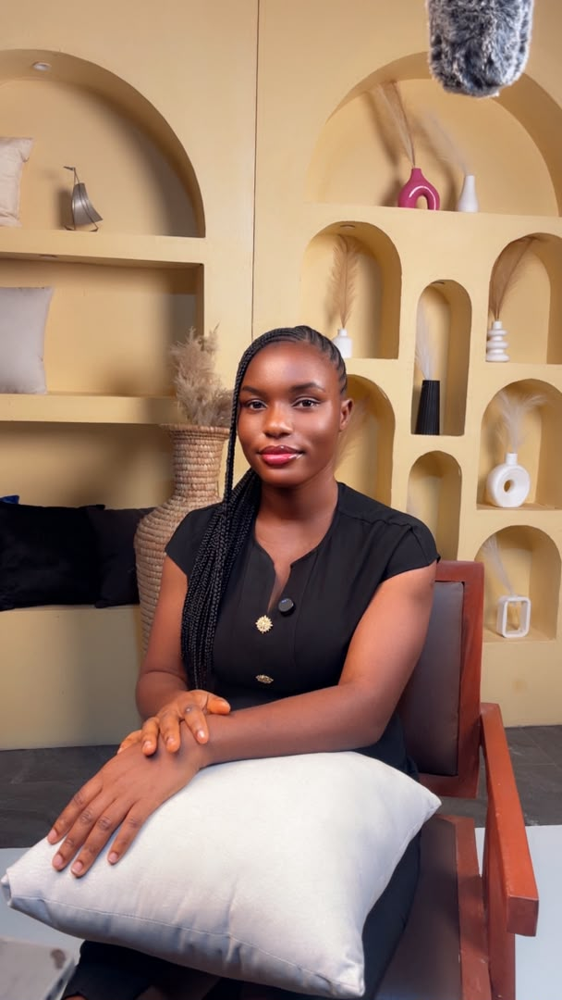
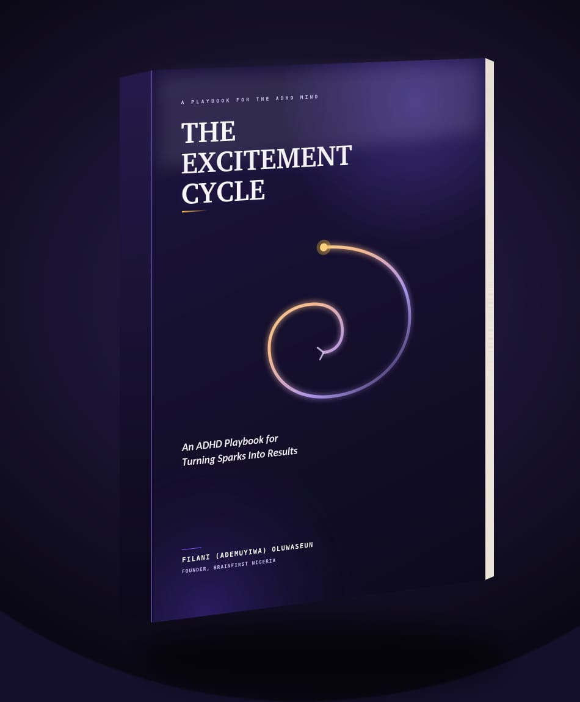

Africa's first ADHD-specialised coaching and consulting brand, for adults who've been called lazy, scattered, or told to "just focus more," and for founders running on decision fatigue before it burns them out.
Three kinds of minds, three different starting points, one framework underneath.
Diagnosed or not, people who've spent years being told to try harder. We build focus and follow-through using the CLEAR Framework, not willpower.
Running on cognitive overload. The Founder Brain Audit gets under the hood of your decision fatigue before it costs you the business.
Teams that need to actually perform. The Cognitive Load Organisational Model (CLOM) redesigns how work gets assigned, paced, and protected.
Not generic productivity advice: built specifically around how ADHD and cognitive overload actually work.
A structured system for building focus and follow-through around how your brain actually works, not against it. Used across 1:1 coaching, therapy-adjacent support, and consulting engagements.
A model for redesigning team workflows around real cognitive capacity, so performance stops depending on who can mask exhaustion best.
A close look at your decision-making load before burnout forces the audit for you.
Attention, burnout, RSD, and decision fatigue screening: clarity before you book a full engagement.
Take the free Mind & Mood check-inReal words from people who came in scattered and left with a system.
I am more relaxed and ready to continue my academic and professional journey. I'd recommend BrainFirst to anyone, she's dedicated and knows the profession very well.Individual coaching client
I now have greater clarity and awareness, along with practical strategies that have truly made a difference in how I approach situations. BrainFirst's approach is practical, insightful, and genuinely supportive.Individual coaching client
Our founder's perspective on ADHD and work in Nigeria, published internationally.
Why ADHD is dismissed as imported, how stigma shapes working life in Nigeria, and what employers can do differently.

I'm the founder of BrainFirst Nigeria, a brand built from my own experience with ADHD and the years I spent confused about myself before I finally had a name for it. That diagnosis handed me answers, but also showed me how little awareness exists around mental health in Nigeria, and how much stigma fills that gap for everyone who never gets the chance to understand themselves the way I did.
Today, I work with individuals, founders, and organizations through coaching, therapy, and community, helping Nigerians make sense of minds like mine, from our own context, not one borrowed from somewhere else. I also wrote The Excitement Cycle, a book for anyone living with ADHD who has big ideas but struggles to see them through.

An ADHD playbook for turning sparks into results, mapping how excitement, momentum, and follow-through actually work in the ADHD brain, and how to ride the cycle instead of fighting it.
Get the bookBook the session that matches where you're starting from, no generic intake, straight to the right conversation.
Choose your session